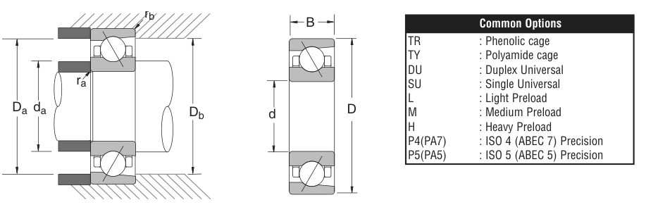

Original catalogue drawing - NSK catalogue, page 191

Scanned from the manufacturer catalogue page listing this part number. All part numbers printed on that table share the same drawing.
Scale cross-section
Blue = inner / outer ring, yellow = rolling element. Drawn to scale from this part's own
dimensions for selection reference only - not a manufacturing or assembly drawing.
Dimension table (mm / inch)
Symbol
Dimension
mm
inch
d
Bore diameter
55
2.1654
D
Outside diameter
90
3.5433
B
Inner-ring / bearing width
18
0.7087
Notes
Weights are given in kg. Load ratings are shown in both the original catalogue units and the converted value (1 N = 0.2248 lbf). Data is provided for selection reference only - confirm against the latest official catalogue before ordering.
Main dimensions
Bore d (mm)
55
Bore d (in)
2.1654
Outside dia. D (mm)
90
Outside dia. D (in)
3.5433
Width B (mm)
18
Width B (in)
0.7087
Load ratings & speeds
Basic dynamic load rating Cr (lbs)
7720
Basic static load rating Cor (lbs)
6440
Limiting speed - grease (rpm)
15,900
Limiting speed - oil (rpm)
24,200
Weight
Weight (kg)
0.422
Mounting dimensions (fillets / shoulders)
Fillet ra (in)
0.039
Fillet rb (in)
0.024
Shaft shoulder da (in)
2.441
Housing shoulder Da (in)
3.268
Housing shoulder Db (in)
3.346
Bearing life (ISO 281 basic rating life)
C / P
Equivalent load P (N)
L10 (106 rev)
L10h at 3,000 rpm
4
8,585
64
356
6
5,723
216
1,200
8
4,293
512
2,844
10
3,434
1,000
5,556
15
2,289
3,375
18,750
Basic rating life per ISO 281: L10 = (C/P)3 with C = 34,340 N. Hours = L10 x 106 / (60n). Life-modification factors for lubrication, contamination and temperature (aISO) are not included.
Source & traceability
Brand
NSK
Source catalogue
NSK inch product catalogue
Catalogue page
p.193 (dimensions) / p.194 (ratings)
Dimensions in inches and millimetres, load ratings in lbs.
Send us the quantity you need and we will come back with price and
lead time, normally within 24 hours. Equivalent parts from other brands can be quoted at the same time.